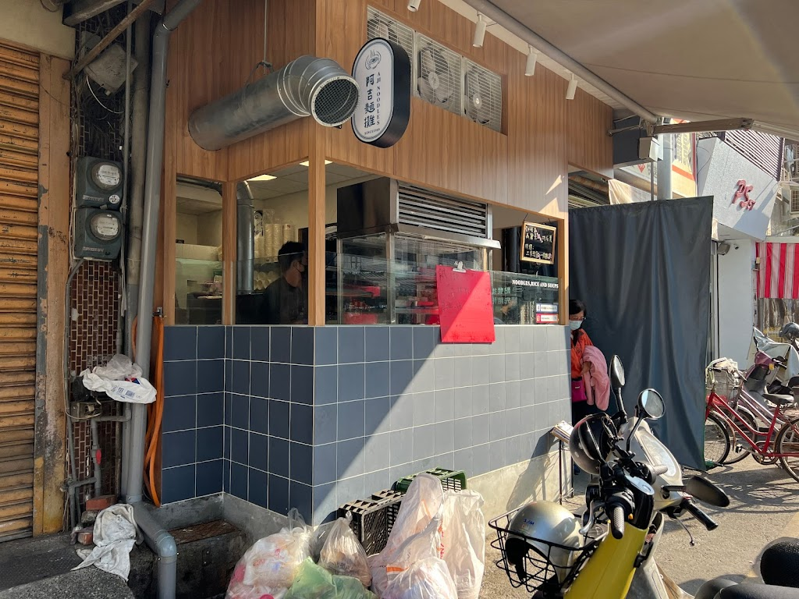
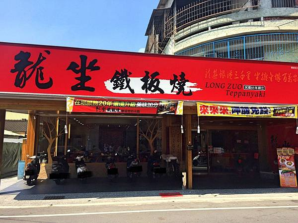
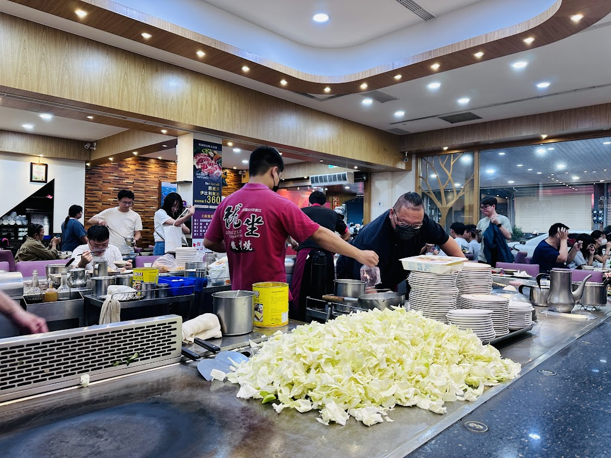
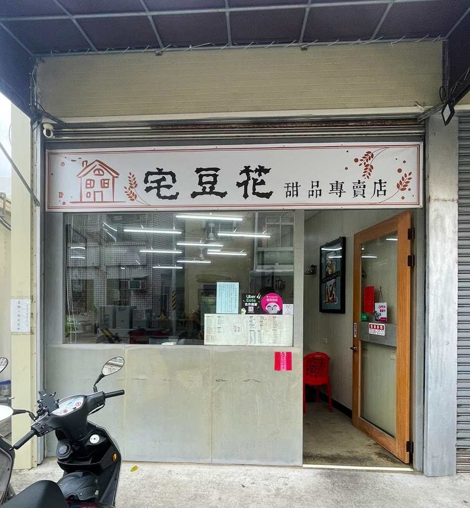
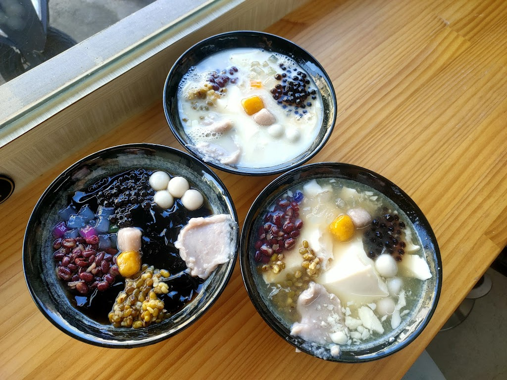

| 阿吉麵攤 | 龍坐鐵板燒 | 宅豆花甜品專賣店 |
| 阿吉麵攤 |
| 『阿吉麵攤』。走近麵攤旁，肉燥香味迎面撲鼻，映入眼簾的，是那令人食指大動的美食，以及老闆快速有效率的烹飪技巧。吃過老闆首推的『香菇肉羹』後，那用大骨湯特別熬製的湯頭，將肉羹的甘甜包裹其中，幸福滋味隨著入口即化的食物蔓延開來。阿吉麵攤從最初的攤販，變成有招牌的固定店面，靠的就是老闆鄭深吉夫婦的努力。除了服務親切外，因為對食材新鮮味美的堅持，每天一早必定親自到市場採買，希望帶給顧客最平實的價格、最不平凡的美食享受。因為老闆的這份用心，讓老闆曾創下一天光是油麵就賣了190斤的驚人紀錄！ |
|  |
.jpg) |
| 龍坐鐵板燒 |
| 位於民雄的龍坐鐵板燒，提供各式鐵板烤肉及海鮮。顧客晚間特別喜歡點選去骨雞腿排和厚切豬排，而沙朗牛排也是受到好評的選擇。此外，餐廳還供應香煎扁鱈、鮮蚵以及多種牛肉和羊肉料理，滿足各種味蕾需求。top |
|  |
 |
| 宅豆花甜品專賣店 |
| 位於民雄的宅豆花甜品專賣店，專門提供各式豆花和仙草甜品。顧客最愛點的美食包括原味豆漿豆花、綜合嫩仙草凍、原味糖水豆花及燒仙草。此外，綜合豆漿豆花和原味豆漿豆花經常一起被點購。店內還供應各種口味的剉冰和燒仙草，適合喜愛傳統與創新口味的顧客。top |
|  |
 |